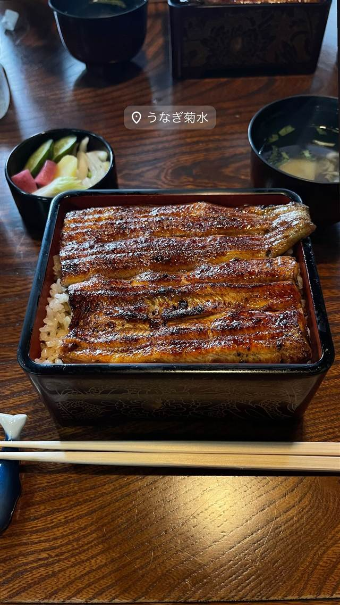

うなぎ・天ぷら · うなぎ · 静岡市
かん吉 静岡店
活きたうなぎを店内で捌き、関西風の地焼きで仕上げるひつまぶし
かん吉 静岡店
静岡市駿河区にある炭火焼うなぎの店。活きたうなぎを店内でさばき、関西風の地焼きでじっくり焼き上げるひつまぶしが名物。
TRIVIA
豆知識
- 屋号「かん吉」は創業者の名字「乾」に、商売がうまくいくようにと「吉」の字を添えたものとされる
REVIEWS
世間の評判
3.53食べログ
関西風地焼き鰻のパリッとした食感
- 皮はパリッと身はふわっとした関西風の焼き方を評価する声が多い
- うな重が4千円台とうなぎにしては良心的な値段だと感じる人が多い
- 開店と同時にほぼ満席になるため予約をすすめる声が多く挙がっている
食べログ 口コミ85件
| 創業 | 1997年、静岡市駿河区に開業 |
|---|---|
| 系譜 | 清水店（かん吉清水店）と並ぶ姉妹店。屋号「かん吉」は創業者の姓「乾」に、商売繁盛を願う「吉」を添えたもの |
| 看板 | ひつまぶし、うな重 |
| こだわり | 活きたうなぎを店内でさばき、関西風の地焼きで炭火を通してじっくり焼き上げる |
| どこから | 日帰りで行ける遠さ |
| 予算 | 昼 ¥4,000～¥4,999 夜 ¥4,000～¥4,999 |
| 定休日 | 月・火曜（祝日は営業） |
| 予約 | 予約可 |
| 場所 | 静岡駅 静岡県静岡市駿河区周辺 |
| メモ | 予約可、月・火曜定休、駐車場9台、開店直後に満席になりやすいため予約が推奨されている |
食べたもの：うな重
NEARBY
近い店・同じ系統の店
-
 うなぎ 浅草
初小川（はつおがわ）
注文を受けてから捌く、継ぎ足し辛口だれの江戸前うな重
昼 ¥3,000～¥3,999 夜 ¥3,000～¥3,999
うなぎ 浅草
初小川（はつおがわ）
注文を受けてから捌く、継ぎ足し辛口だれの江戸前うな重
昼 ¥3,000～¥3,999 夜 ¥3,000～¥3,999
-
 うなぎ 浜松駅（徒歩7分）
うなぎ料理 あつみ
関東風と関西風を組み合わせたあつみ独自の焼き方でうなぎを仕上げる
昼 ¥5,000～¥5,999 夜 ¥5,000～¥5,999
うなぎ 浜松駅（徒歩7分）
うなぎ料理 あつみ
関東風と関西風を組み合わせたあつみ独自の焼き方でうなぎを仕上げる
昼 ¥5,000～¥5,999 夜 ¥5,000～¥5,999
-
 うなぎ 浜松駅
炭焼うなぎ あおいや
蒸さず備長炭で直火焼き、パリッと皮の関西風うな重
昼 ¥3,000～¥3,999 夜 ¥3,000～¥3,999
うなぎ 浜松駅
炭焼うなぎ あおいや
蒸さず備長炭で直火焼き、パリッと皮の関西風うな重
昼 ¥3,000～¥3,999 夜 ¥3,000～¥3,999
-
 うなぎ 赤坂
赤坂ふきぬき
東京で唯一とされる本格的な関東風ひつまぶしを100年続くタレで提供する
昼 ¥3,000～¥3,999 夜 ¥8,000～¥9,999
うなぎ 赤坂
赤坂ふきぬき
東京で唯一とされる本格的な関東風ひつまぶしを100年続くタレで提供する
昼 ¥3,000～¥3,999 夜 ¥8,000～¥9,999
-

うなぎ 鷺沼 菊水 1日2回、朝と午後にさばく国産うなぎの上品なうな重 昼 ¥4,000～¥4,999 夜 ¥5,000～¥5,999 -
 うなぎ 六本木駅
鰻處 黒長堂 六本木ヒルズ店
関東では珍しい、蒸さず炭火で直焼きする地焼きのうな重
昼 ¥5,000～¥5,999 夜 ¥8,000～¥9,999
うなぎ 六本木駅
鰻處 黒長堂 六本木ヒルズ店
関東では珍しい、蒸さず炭火で直焼きする地焼きのうな重
昼 ¥5,000～¥5,999 夜 ¥8,000～¥9,999